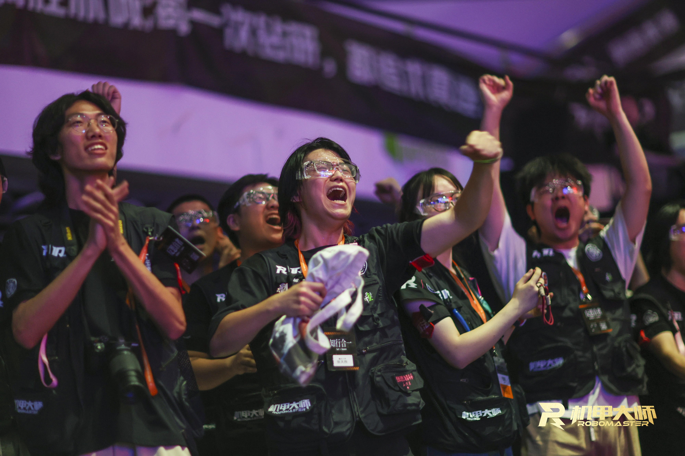

入门前的坦白
RoboMaster 不是短线比赛，而是一个你要把至少一到两年光阴真正奉献进去的地方。艰苦的工作、压缩的休闲、备赛期与课业的冲突——这些都是真实存在的代价。
如果你是为了加分、绩点，这里并不是一个高性价比的选择。你需要有摒弃以绩点为核心的传统大学价值观的勇气，构建起属于自己的评价体系。本科培养方案永远只能兼顾大多数人，也存在滞后性。在这里，你需要成为自己的引路人。
很高兴你读完这段话。招新的信息在页末，但是如果你是第一次来，请你耐心看完前面的内容。跳转至 27 赛季夏季招新 →
Join Us
加入千里，加入机械组，意味着你选择了一条不走寻常路。
RoboMaster 不是短线比赛，而是一个你要把至少一到两年光阴真正奉献进去的地方。艰苦的工作、压缩的休闲、备赛期与课业的冲突——这些都是真实存在的代价。
如果你是为了加分、绩点，这里并不是一个高性价比的选择。你需要有摒弃以绩点为核心的传统大学价值观的勇气，构建起属于自己的评价体系。本科培养方案永远只能兼顾大多数人，也存在滞后性。在这里，你需要成为自己的引路人。
很高兴你读完这段话。招新的信息在页末，但是如果你是第一次来，请你耐心看完前面的内容。跳转至 27 赛季夏季招新 →

在新人身上，我们看重的根本不是技术能力，而是人性。RoboMaster是一场长跑，我们看重的是你有没有潜力成为团队的中坚力量，而不是只懂技术的匆匆过客。我们相信，只有先成为好的人，才能成为好的工程师。这里列出的，不是技能要求，而是我们认为一个人走得长远的底色。
正确的自我认知是内驱力的起点，也是个人成长的地基。
不好高骛远，一步一个脚印，保持谦卑姿态
不因小成就自满，也不因远大目标而眼高手低。保持持续学习的心态，不轻易对人产生偏见或优越感。真正厉害的人往往最清楚自己还差多少，也最清楚下一步该踩在哪里。
永远找参照，知道自己几斤几两
看头部队伍在做什么，看团队当下的需求是什么，再回来判断自己的水平在哪、差距在哪、要投入多少。不靠感觉，靠基准。把好的国赛队伍和自己比较，才知道路有多远。
脑子 24 小时挂载着问题
不只是坐在工位才动脑。真正投入一个问题的人，通勤、洗澡、睡前都在咀嚼，灵感和突破往往就从这里来。
不怕废案，不怕重开，打不死
技术能力的积淀不是一朝一夕，持之以恒的态度永远比一时的聪明更重要。不怕废案，不怕重开，失败了 A 才让我们明白 B 的价值。要给自己一些耐心，等到花开需要长时间的浇灌。
把隐患消灭在图纸阶段
不是出了问题再来补救，而是在正向推进时就把风险和影响内建进去。做方案的时候就在想：这里如果出问题会影响谁？这个接口下游能不能接受？
看长远，不被眼前得失困住
不只看眼前的任务和得失，能把目光放长远，追求可持续的成长。机械组不是刷履历的地方，我们想要的是愿意真正扎下来的人。
利他是最好的利己。只有先创造一个更好的集体，才能更高效地进步。我们不欢迎精致的利己主义者。
主动参与，不等任务派发
不被动等任务，能从全局视角理解目标和进展，主动认领工作，清楚自己在团队里处于什么位置。当一天和尚撞一天钟的人，既帮不了队伍，也帮不了自己。
答应的事做到底，不烂尾不甩锅
答应的事做到底，做不到就提前说，不让问题悄悄烂在自己手里。你的输出质量会直接影响下游队友的工作，这不是个人的事。
遇到问题先开口，不单打独斗
遇到问题乐于讨论而不是单打独斗，看到队友有困难主动出手。沟通是解决问题最快的工具，不是软弱的表现。
公事走群聊，不搞小团体
公事走群聊，不搞小团体，用信息流动带动整体。不透明的团队，内耗会把所有人拖垮。
尊重前辈，尊重团队走过的历史
尊重团队走过的历史和前辈付出的积累。每一个现在看起来理所当然的东西，背后都有人筚路蓝缕。
把队伍当家，不只是来做事的
这个团队靠每一个人用热爱和汗水去浇筑，和队友有真实的情感联结，而不只是一台完成任务就离开的机器。
工作就是折射自我的镜子。你如何对待它，它就如何定义你。
想清楚了就动手，没有借口
想清楚了就动手，不过度犹豫，不因怕出错而踌躇不前。唯一合理的不行动，是你在做有理有据的正向思考或资料搜集，除此之外没有借口。
不嫌脏不嫌累，多摸实物多见问题
和机械打交道，难免修车维护、脏活累活。多摸实物、多见问题，才能建立真正的工程直觉，知道什么合理什么不合理。这是机械组区别于纯画图组的核心。
用记录说话，不靠印象扯皮
做了就是做了，没做就是没做。周期复盘、赛后复盘、验收复盘是基本工作流，背后是敢于正视问题、不掩盖不回避的态度。
把话说清楚，工作中必须开口
不要求口才好，但必须把话说清楚。不管性格内外向，工作中必须开口，主动交流，不含糊带过。说不清楚的事情，往往是没想清楚。
过程要记录，节点要沉淀
留痕不只是流程要求，也是对自己和队友负责——记录下来的东西才是团队真正的资产，也是防止扯皮的最好方式。
做了什么不重要，做成了什么才重要
坚持把事情做完，凡事要有个结果。过程固然重要，但是只有结果导向的过程才不只是体验。即便是失败，也要有经验总结，输也要输个所以然，当然成功更是应当坚持不懈追求的目标。不以努力和过程自我感动，以产出和结果说话。
我们教的不只是怎么画 RM 机器人的机械结构。
工具是最底层的学习。在机械组，我们更看重的是上层的东西：表达能力、文档与设计审美、英语、AI 工具的运用、整合零碎知识的能力——这些让你能够迅速适应机器人行业各种岗位需求的核心素养。
我们希望加入进来的人对自己有成长的意愿和自我要求，不只是在技术上，而是在各个维度上。最终沉淀下来最宝贵的，不是你学会了哪个软件，而是更抽象的思维范式和工程经验。
除 3-8 月 外，机械组长期开放 自荐投递通道，考核评估标准另设。你可以先整理自己的兴趣方向、过往作品或学习记录，再与我们取得联系。
联系我们 →一些常见疑问会在这里持续补充。
即便你已经即将步入大二，零基础也并不关键。通常来说我们会对大二的同学在前期培训上提出更高的自主性要求，在整个比赛周期上提出更高的成长速率要求，但是你们的优势是已经初步适应了大学的生活，所以一切都不算晚。不过就机械组而言，我们更加期望的是你依然能够对自己的比赛生涯拥有两年的预期，给自己留有充分的成长与做贡献的时间和机会，同时也是在帮助战队与机械组的延续和传承（如果能力发展尚可，可以在大三转为顾问）。
一会儿再补上。